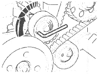

[750]Dynamic adjustment of fuel pump
Dynamic adjustment of fuel pump must be done after change of tooth belt.
Check fuel pump setting
Engine running
Engine temperature above 80 °C
Choose ”Dynamic adjustment of fuel pump” (The control unit will increase the engine speed and turn off all consumers.)
Read out ”Injection timing (A)” and ”Fuel temperature (B)”, compare the values with the diagram, see fig 1 below. The intersection point should be with in the solid lines. If the intersection point is out of range should “Check/Adjust tooth belt tension” and “Dynamic adjustment of fuel pump” be performed in this order.
Exit the function with ”Back”-button or ESC.
 |
Fig 1
Check/Adjust tooth belt tension
Engine running
Detach the air house between fan casing and air filter
Detach the air boost house between the inlet air pipe and air boost cooler
Detach the belt guard
Check the tension indicators position on the tooth belt tensioner. If the tension indicators are out of range.
Loosen the tooth belt tensioner screw
Turn the tooth belt tensioner anti-clockwise to end position and then back until the two indicators are in line, se fig 2 below.
Tighten the tooth belt tensioner screw with 20 Nm
 |
Fig 2
Dynamic adjustment of fuel pump
Detach the air hose between fan casing and air filter
Detach the air boost hose between the inlet air pipe and air boost cooler
Detach the belt guard
Engine running
Engine temperature above 80 °C
Choose ”Dynamic adjustment of fuel pump” (The control unit will increase the engine speed and turn off all consumers.)
Loosen the adjustment roller bult and adjust the timing. Read out ”Injection timing (A)” and ”Fuel temperature (B)”, compare the values with the diagram, see fig 4 below. The intersection point should be with in the dashed lines.
Tighten the adjustment roller bult with 25 Nm.
Exit the function with ”Back”-button or ESC.
Fig 3 |
Fig 4 |